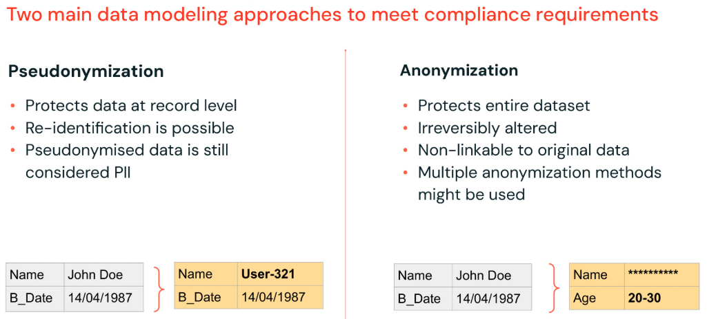

Section 7 · Governance and Security · Quelle: Kurs 6, DP 1.2
Bevor personenbezogene Daten (PII) analysiert, für Machine Learning genutzt oder an nachgelagerte Teams weitergegeben werden, sollten sie entweder pseudonymisiert oder anonymisiert werden. Wichtig vorab: Mit ausreichend Zeit und Zusatzdaten lässt sich praktisch jeder Datensatz re-identifizieren – beide Techniken reduzieren also das Risiko, beseitigen es aber nicht vollständig. Der grundlegende Unterschied liegt darin, was geschützt wird und ob der Vorgang umkehrbar ist.

Bei der Pseudonymisierung wird ein personenbezogenes Merkmal (z. B. eine user_id) durch einen künstlichen Bezeichner ersetzt. Der Clou: Über eine gesicherte Zuordnungstabelle oder eine deterministische Funktion lässt sich der Original-Wert bei Bedarf wiederherstellen. Rechtlich wichtig: Pseudonymisierte Daten gelten nach DSGVO weiterhin als personenbezogene Daten – die Pseudonymisierung ersetzt keine Löschpflicht, sie schützt lediglich vor unautorisiertem Zugriff auf den Klartext. Zwei Verfahren kommen zum Einsatz: Hashing und Tokenisierung.
Eine Hash-Funktion erzeugt aus einem Eingabewert eine Zeichenkette fester Länge. Da Hash-Funktionen deterministisch sind, könnte derselbe Eingabewert (z. B. eine bekannte User-ID) durch simples Ausprobieren zurückgerechnet werden. Um das zu erschweren, wird vor dem Hashing ein zufälliger, geheimer Wert – das Salt – angehängt. In produktiven Pipelines sollte dieses Salt nicht im Klartext im Code stehen, sondern über die Databricks Secrets API (dbutils.secrets.get(...)) verwaltet werden, sodass nur berechtigte Jobs und Nutzer darauf zugreifen können. Das folgende Beispiel stammt aus der echten Pipeline DP 1.2.1 - Pseudonymized PII Lookup Table:
from pyspark import pipelines as dp
import pyspark.sql.functions as F
# In dieser Demo als Klartext-Variable; produktiv ueber
# dbutils.secrets.get(scope="pii", key="hash_salt") aus einem Secret Scope laden
salt = "BEANS"
# Funktion zum Pseudonymisieren per Salted Hashing
def salted_hash(id):
return F.sha2(F.concat(id, F.lit(salt)), 256)
# Pseudonymisierte Lookup-Tabelle: alt_id ersetzt user_id in allen Downstream-Tabellen
@dp.table
def user_lookup_hashed():
return (dp
.read_stream("registered_users")
.select(
salted_hash(F.col("user_id")).alias("alt_id"),
"device_id", "mac_address", "user_id")
)
Nur die schmale user_lookup_hashed-Tabelle enthält später noch die Verbindung zwischen alt_id und der echten user_id; alle anderen Pipelines arbeiten ausschließlich mit der pseudonymisierten alt_id. Wird der Zugriff auf diese eine Lookup-Tabelle konsequent eingeschränkt, lässt sich die Re-Identifikation im gesamten übrigen System wirksam verhindern.
Bei der Tokenisierung wird jedem eindeutigen Wert ein zufälliges Token (meist eine UUID) zugewiesen und die Zuordnung in einem separaten, gesicherten Token-Vault gespeichert. Tokenisierung ist beim Schreiben langsamer als Hashing, da ein Join gegen die Vault-Tabelle nötig ist – beim Lesen dafür effizient, da nur der Token weitergereicht wird.
# Vault-Tabelle: pro eindeutigem user_id ein zufaelliges Token
@dp.table
def registered_users_tokens():
return (dp
.readStream("registered_users")
.select("user_id")
.distinct()
.withColumn("token", F.expr("uuid()"))
)
# Pseudonymisierte Lookup-Tabelle: user_id wird durch Token (alt_id) ersetzt
@dp.table
def user_lookup_tokenized():
return (dp
.read_stream("registered_users")
.join(dp.read("registered_users_tokens"), "user_id", "left")
.drop("user_id")
.withColumnRenamed("token", "alt_id")
)
Anonymisierung verändert personenbezogene Daten so, dass eine Person weder direkt noch indirekt identifiziert werden kann – und das absichtlich unumkehrbar. Anders als Pseudonymisierung schützt sie meist den gesamten Datensatz statt einzelner Datensätze und eignet sich besonders für Business-Intelligence-Anwendungsfälle, bei denen Trends und Aggregationen wichtiger sind als Einzelwerte. In der Praxis kombiniert man meist mehrere Techniken.
Bedingte Filter und dynamische Zugriffskontrollen (siehe Kapitel 05-2 zu Row Filters/Dynamic Views) entfernen ganze Spalten oder Zeilen aus dem Ergebnis, ohne die Auswertungsfähigkeit für Aggregationen einzuschränken. Auch Gruppen mit sehr niedriger Datensatzanzahl (z. B. "nur ein Kunde in dieser Postleitzahl") sollten gefiltert werden, da solche Kleinstgruppen re-identifizierbar sind.
Generalisierung nimmt Daten gezielt Präzision, ohne sie ganz zu entfernen: Städte werden zu Bundesländern zusammengefasst (kategoriale Generalisierung), exakte Werte werden in Bänder/Bins gruppiert, IP-Adressen werden auf ein /24-Subnetz gekürzt (letztes Byte auf 0 gesetzt), und Zahlen werden gerundet. Das folgende Beispiel aus der Pipeline DP 1.2.2 - Anonymized Users Age zeigt Binning: Statt eines exakten Geburtsdatums wird nur noch eine Altersspanne gespeichert.
def age_bins(dob_col):
age_col = F.floor(F.months_between(F.current_date(), dob_col) / 12).alias("age")
return (
F.when((age_col < 18), "under 18")
.when((age_col >= 18) & (age_col < 25), "18-25")
.when((age_col >= 25) & (age_col < 35), "25-35")
.when((age_col >= 35) & (age_col < 45), "35-45")
.when((age_col >= 45) & (age_col < 55), "45-55")
.when((age_col >= 55) & (age_col < 65), "55-65")
.when((age_col >= 65) & (age_col < 75), "65-75")
.when((age_col >= 75) & (age_col < 85), "75-85")
.when((age_col >= 85) & (age_col < 95), "85-95")
.when((age_col >= 95), "95+")
.otherwise("invalid age")
.alias("age")
)
@dp.table
def user_age_bins():
return (
dp.read("users_bronze")
.select("user_id", age_bins(F.col("dob")), "gender", "city", "state")
)
Aus dem exakten Geburtsdatum – einem eindeutigen, hoch identifizierenden Merkmal – wird so eine von zehn groben Alterskategorien. Auswertungen wie "Wie verteilen sich Nutzer über Altersgruppen?" bleiben möglich, eine Re-Identifikation einzelner Personen über das Geburtsdatum ist jedoch ausgeschlossen.
| Technik | Schutzgrad | Reversibel? | Typischer Einsatzzweck |
|---|---|---|---|
| Data Masking | Niedrig–Mittel | Teilweise | Operative Nutzbarkeit bei reduziertem Risiko erhalten |
| Pseudonymisierung (allgemein) | Niedrig–Mittel | Ja | Längsschnittstudien, bei denen Personen wiedererkennbar bleiben müssen |
| Hashing (mit Salt) | Mittel–Hoch | Praktisch nein (ohne Salt) | Sichere, verknüpfbare Kennungen, z. B. Passwort-Speicherung |
| Column Encryption | Hoch | Ja (mit Schlüssel) | Besonders sensible Einzelspalten |
| Tokenisierung | Hoch | Ja (über Vault) | Zahlungsdaten, Kreditkartentransaktionen |
Als Faustregel gilt: keine PII zu speichern ist immer besser, als PII zu schützen. Wo PII unvermeidbar ist, gilt die Rangfolge Anonymisierung > Pseudonymisierung > Klartext. Zusätzlich lohnt es sich, immer zu bedenken, wie sich mehrere eigentlich harmlose Datensätze kombinieren lassen, um eine Person doch wieder zu identifizieren – und PII-verarbeitende Umgebungen konsequent von anderen Workloads zu isolieren.